The CCXT Exchange Adapter provides a standardized interface between the backtest-kit framework and the CCXT library, specifically configured for Binance. It implements a reusable ccxt-exchange schema that handles market data retrieval, order book fetching, and precision formatting for prices and quantities. This adapter is shared across data dumping, strategy optimization, and forecast testing modules.
To prevent redundant network connections and repeated market loading, the adapter utilizes a singleshot singleton pattern to initialize the Binance exchange instance.
| Feature | Configuration | File Reference |
|---|---|---|
| Exchange | ccxt.binance |
|
| Market Type | spot |
|
| Time Sync | adjustForTimeDifference: true |
|
| Rate Limiting | enableRateLimit: true |
The getExchange function ensures that exchange.loadMarkets() is called exactly once before any trading or data fetching operations occur.
The adapter is registered using addExchangeSchema, defining how the system interacts with the physical exchange.
The getCandles function maps CCXT's fetchOHLCV output (an array of arrays) into the structured object format required by the backtest-kit engine.
The getOrderBook implementation includes a safety check to prevent execution during backtests, as historical order book data is not supported in the default schema. In live contexts, it fetches and formats asks and bids as string-based price/quantity pairs.
To ensure orders are accepted by the exchange, the adapter provides formatPrice and formatQuantity. These functions retrieve tickSize and stepSize from the market metadata.
market.limits or market.precision to find the minimum increment.roundTicks to align the value with the exchange's required increments.priceToPrecision or amountToPrecision methods.This diagram maps the natural language requirements of exchange interaction to the specific code entities and CCXT methods used in the implementation.
Exchange Data Flow

The run_forecast.ts script utilizes the ccxt-exchange schema within a runInMockContext wrapper. This allows developers to test the LLM's forecasting logic against real-world historical data by mocking the execution environment (symbol and timestamp) while providing the actual exchange adapter for data resolution.
Forecast Mock Context Flow

| Module | Schema Role | Key Functions |
|---|---|---|
dump.module.ts |
Data Extraction | getCandles |
walker.module.ts |
Strategy Optimization | getCandles, getOrderBook, formatPrice, formatQuantity |
pine.module.ts |
Signal Generation | getCandles |
run_forecast.ts |
Logic Validation | getCandles, formatPrice, formatQuantity |